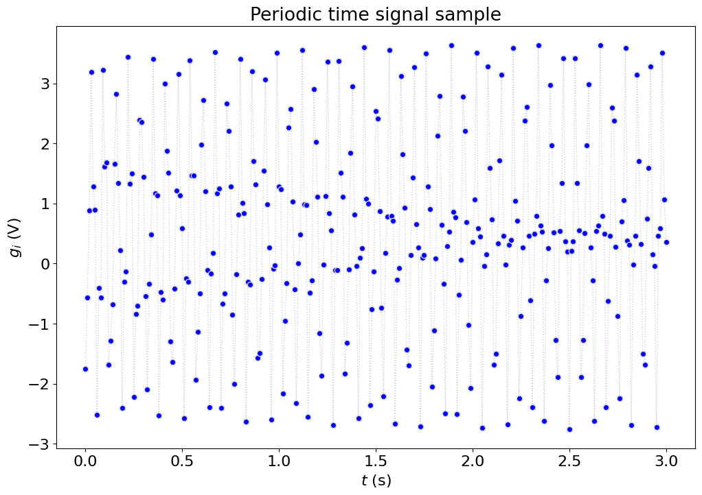
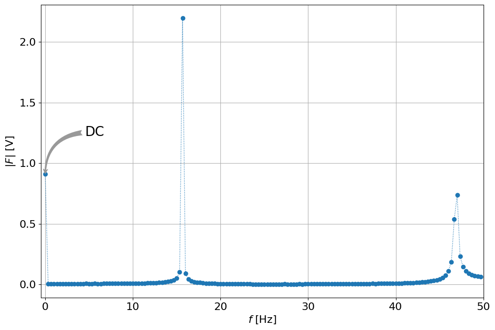
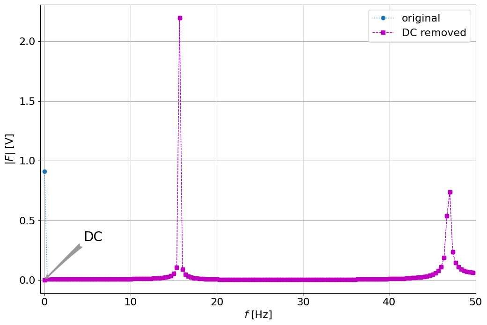
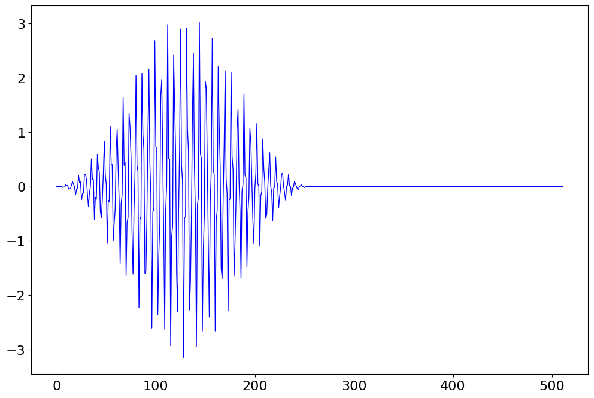

FFT demo of a real, periodic signal#
a) naive way
b) windowing with DC treatment
from numpy import *
from numpy.fft import fft
from matplotlib.pyplot import *
%matplotlib inline
# redefine default figure size and fonts
import matplotlib as mpl
# mpl.rc('text', usetex = True)
mpl.rc('font', family = 'sans serif',size=16)
mpl.rc('figure',figsize=(12,8))
mpl.rc('lines', linewidth=1, color='lightblue',linestyle=':',marker='o')
Given periodic signal, sampling frequency and total time#
f_s = 100.0 # sampling frequency (Hz)
T = 3.0 # total actual sample time (s)
g = loadtxt('../data/FFT_Example_data_with_window.txt')
# first few values
g[:5]
array([-1.7527, -0.565 , 0.8801, 3.1924, 1.2804])
# first, visualize the signal
del_t = 1/f_s # time resolution [s]
t = arange(0.0,T+del_t,del_t) # time, t (s)
# plotSignal(t,g,f_s)
plot(t,g,marker='o',markerfacecolor='b',linestyle=':',color='lightgrey')
xlabel('$t$ (s)')
ylabel('$g_i$ (V)')
title('Periodic time signal sample')
show()

# does it have a non-zero mean, DC value
DC = g.mean()
print ('DC = %f [V]' % DC)
DC = 0.452950 [V]
Calculate the necessary parameters: \(N, \Delta t, \Delta f, f_{fold},N_{freq}\)#
N = f_s*T # number of data points
del_t = 1./f_s # time resolution (s)
del_f = 1./T # frequency resolution(Hz)
f_fold = f_s/2. # folding frequency = Nyquist frequency of FFT (Hz)
N_freq = int(N/2.) # number of useful frequency points
Frequency analysis using naive FFT#
frequency = arange(0,f_fold,del_f) #frequency (Hz)
G = fft(g) # FFT
print( G[:10])
print( G.shape)
[136.3379 +0.j 0.85689194+0.01756347j
0.7956033 +0.03999151j 0.83065943+0.02317239j
0.81648114+0.01029308j 0.86012694-0.03048062j
0.88366205-0.03279026j 0.91944369-0.03388283j
0.82537342-0.0616697j 0.78619988+0.03823325j]
(301,)
Magnitude = abs(G)/(N_freq) # complex -> amplitude: |F|/(N/2)
figure()
plot(frequency,Magnitude[:N_freq])
grid('on')
xlim([-.5,f_fold])
xlabel('$f$ [Hz]')
ylabel('$|F|$ [V]')
annotate('DC', xy=(0,.9), xycoords='data',
xytext=(60, 60), textcoords='offset points',
size=20,
arrowprops=dict(arrowstyle="fancy",
fc="0.6", ec="none",
connectionstyle="angle3,angleA=0,angleB=90"),
)
show()

Notes#
Note the value at 0 Hz, what can we learn from it (we saw it’s about 0.45 Volt?
What do we learn from about the frequencies? about 2.1V at 16 Hz and 0.7 Volt at 47 Hz?
Let’s remove DC first and see the result
figure()
plot(t,g,t,g-DC,'ms')
xlabel('$t$ [sec]')
ylabel('$g$ [V]')
legend(('original','DC removed'))
<matplotlib.legend.Legend at 0x7fa6b8de3e90>
# repeat the frequency analysis
G = fft(g-DC) # FFT of the signal without DC
Magnitude1 = abs(G)/(N_freq) # complex -> amplitude: |F|/(N/2)
figure()
plot(frequency,Magnitude[:N_freq], frequency,Magnitude1[:N_freq],'--ms')
annotate('DC', xy=(0,0), xycoords='data',
xytext=(60, 60), textcoords='offset points',
size=20,
arrowprops=dict(arrowstyle="fancy",
fc="0.6", ec="none",
connectionstyle="angle3,angleA=0,angleB=45"),
)
grid('on')
xlim([-.5,f_fold])
xlabel('$f$ [Hz]')
ylabel('$|F|$ [V]')
legend(('original','DC removed'))
show()

Let’s use do it the right way:#
use 2^k number of points for faster FFT
multiply the signal by a low-pass filter:
assure there is no aliasing
get read of the edges and make it less leaking
# let's check how much we gain if we do it right size:
%timeit fft(g)
%timeit fft(g[:256]) # 256 points instead of 301, not waisting much data
# even if it's longer, but the right size with zeros at the end
g1 = zeros((512,))
g1[:301] = g.copy()
%timeit fft(g1)
14 μs ± 519 ns per loop (mean ± std. dev. of 7 runs, 100,000 loops each)
11 μs ± 372 ns per loop (mean ± std. dev. of 7 runs, 100,000 loops each)
---------------------------------------------------------------------------
KeyboardInterrupt Traceback (most recent call last)
Cell In[10], line 9
7 g1 = zeros((512,))
8 g1[:301] = g.copy()
----> 9 get_ipython().run_line_magic('timeit', 'fft(g1)')
File ~/Documents/repos/engineering_experiments_measurements_course/.conda/lib/python3.12/site-packages/IPython/core/interactiveshell.py:2480, in InteractiveShell.run_line_magic(self, magic_name, line, _stack_depth)
2478 kwargs['local_ns'] = self.get_local_scope(stack_depth)
2479 with self.builtin_trap:
-> 2480 result = fn(*args, **kwargs)
2482 # The code below prevents the output from being displayed
2483 # when using magics with decorator @output_can_be_silenced
2484 # when the last Python token in the expression is a ';'.
2485 if getattr(fn, magic.MAGIC_OUTPUT_CAN_BE_SILENCED, False):
File ~/Documents/repos/engineering_experiments_measurements_course/.conda/lib/python3.12/site-packages/IPython/core/magics/execution.py:1199, in ExecutionMagics.timeit(self, line, cell, local_ns)
1196 if time_number >= 0.2:
1197 break
-> 1199 all_runs = timer.repeat(repeat, number)
1200 best = min(all_runs) / number
1201 worst = max(all_runs) / number
File ~/Documents/repos/engineering_experiments_measurements_course/.conda/lib/python3.12/timeit.py:208, in Timer.repeat(self, repeat, number)
206 r = []
207 for i in range(repeat):
--> 208 t = self.timeit(number)
209 r.append(t)
210 return r
File ~/Documents/repos/engineering_experiments_measurements_course/.conda/lib/python3.12/site-packages/IPython/core/magics/execution.py:173, in Timer.timeit(self, number)
171 gc.disable()
172 try:
--> 173 timing = self.inner(it, self.timer)
174 finally:
175 if gcold:
File <magic-timeit>:1, in inner(_it, _timer)
File ~/Documents/repos/engineering_experiments_measurements_course/.conda/lib/python3.12/site-packages/numpy/fft/_pocketfft.py:211, in fft(a, n, axis, norm, out)
209 if n is None:
210 n = a.shape[axis]
--> 211 output = _raw_fft(a, n, axis, False, True, norm, out)
212 return output
File ~/Documents/repos/engineering_experiments_measurements_course/.conda/lib/python3.12/site-packages/numpy/fft/_pocketfft.py:94, in _raw_fft(a, n, axis, is_real, is_forward, norm, out)
90 elif ((shape := getattr(out, "shape", None)) is not None
91 and (len(shape) != a.ndim or shape[axis] != n_out)):
92 raise ValueError("output array has wrong shape.")
---> 94 return ufunc(a, fct, axes=[(axis,), (), (axis,)], out=out)
KeyboardInterrupt:
# let's do it right:
N_2 = 2**fix(log2(N)).astype(int) # shorten to 2^k
T_2 = N_2/f_s # total useful sample time (s)
del_f_2 = 1/T_2 # (Hz)
N_freq_2 = N_2/2 # number of useful discrete frequencies
t_2 = arange(0.0,T_2+del_t,del_t) #time, t (s)
frequency_2 = arange(0,f_fold,del_f_2) #frequency (Hz)
len2, = t_2.shape
# remove DC first
g_uncoupled_2 = g - DC
N_2
256
# create the low pass filter, called Hanning
u_Hann_2 = 0.5*(1-cos(2*pi*t_2[:-1]/T_2)) #u_Hanning(t)
DC_2 = mean(g[:len2-1]) #DC = mean value of input signal (V) (average of all the useful data)
g_uncoupled_2 = g[:len2-1]-DC_2 # uncoupled
g_Hann_2 = g_uncoupled_2 * u_Hann_2
figure()
plot(u_Hann_2,'r--')
plot(g_Hann_2,'b-')
plot(g,'c:')
[<matplotlib.lines.Line2D at 0x7f3803892610>]
# take the FFT of the filtered, shorter signal
G_Hann_2 = fft(g_Hann_2,N_2) #G(omega) with Hanning window
Magnitude_Hann_2 = abs(G_Hann_2)*sqrt(8./3.)/(N_2/2) #|F|*sqrt(8/3)/(N/2)
# Magnitude_Hann_2[0] = Magnitude_Hann_2[0]/2 + DC_2 #(also divide the first one by 2, and add back the DC value)
# len_loc, = Magnitude_Hann_2.shape
# A_2 = Magnitude_Hann_2[0:round(len_loc/2)]
# Freq_2 = frequency_2[0:round(len_loc/2)]
figure()
plot(frequency,Magnitude[:frequency.shape[0]],'b:x')
plot(frequency_2,Magnitude_Hann_2[:frequency_2.shape[0]], 'r-s')
xlabel('frequency, (Hz)')
ylabel('abs(F)')
title('FFT Frequency Spectrum')
legend(('Simple','Window + DC'))
<matplotlib.legend.Legend at 0x7f3803981040>
# the frequency resolution is worse, but the result is better
del_f, del_f_2
(0.3333333333333333, 0.390625)
# let's do it better if we get more points, better resolution
# we can recover the same resolution as before by adding zeros
# or improve somewhat by taking longer to the next 2^k vector
N_3 = 2**ceil(log2(N)).astype(int) # shorten to 2^k
T_3 = N_3/f_s # total useful sample time (s)
del_f_3 = 1/T_3 # (Hz)
N_freq_3 = int(N_3/2) # number of useful discrete frequencies
t_3 = arange(0.0,T_3+del_t,del_t) #time, t (s)
frequency_3 = arange(0,f_fold,del_f_3) #frequency (Hz)
len3, = t_3.shape
# prepare the same signal
g_uncoupled_2 = g - DC
u_Hann_2 = 0.5*(1-cos(2*pi*t_2[:-1]/T_2)) #u_Hanning(t)
DC_2 = mean(g[:int(len2-1)]) #DC = mean value of input signal (V) (average of all the useful data)
g_uncoupled_2 = g[:int(len2-1)]-DC_2 # uncoupled
g_Hann_2 = g_uncoupled_2 * u_Hann_2
# pad with zeros
g_Hann_3 = zeros((N_3,))
g_Hann_3[:g_Hann_2.shape[0]] = g_Hann_2.copy()
figure()
plot(g_Hann_3,'b-')
# take the FFT of the filtered, shorter signal
G_Hann_3 = fft(g_Hann_3,N_3) #G(omega) with Hanning window
Magnitude_Hann_3 = abs(G_Hann_3)*sqrt(8./3.)/(N_2/2) #|F|*sqrt(8/3)/(N/2)
# Magnitude_Hann_2[0] = Magnitude_Hann_2[0]/2 + DC_2 #(also divide the first one by 2, and add back the DC value)
len_loc, = Magnitude_Hann_3.shape
A_3 = Magnitude_Hann_3[0:int(len_loc/2)]
Freq_3 = frequency_3[0:int(len_loc/2)]

N_3
512
figure()
plot(frequency,Magnitude[:frequency.shape[0]],'b:x')
plot(frequency_2,Magnitude_Hann_2[:frequency_2.shape[0]], 'g--o')
xlabel('frequency, (Hz)')
plot(frequency_3,Magnitude_Hann_3[:frequency_3.shape[0]], 'r-s')
xlabel('frequency, (Hz)')
ylabel('abs(F)')
title('FFT Frequency Spectrum')
legend(('Simple','256', 'Window + DC'))
<matplotlib.legend.Legend at 0x7f38038199d0>
f = frequency_2
a = Magnitude_Hann_2[:f.shape[0]]
plot(f,a)
[<matplotlib.lines.Line2D at 0x7f38061a2b20>]
a1,f1 = a.max(),f[a.argmax()]
print (a1,f1)
1.7914015486916908 15.625
b = a.copy()
b[:a.argmax()+10] = 0 # remove the first peak
a2,f2 = b.max(),f[b.argmax()]
print( a2,f2)
0.7161739235195177 46.875
# our model now is the time reconstructed signal
t = arange(0.0,T+del_t,del_t) # time, t (s)
g1 = DC + a1*sin(2*pi*f1*t) + a2*sin(2*pi*f2*t)
plot(t,g,'b--',t,g1,'r-')
[<matplotlib.lines.Line2D at 0x7f380396c220>,
<matplotlib.lines.Line2D at 0x7f380396c130>]